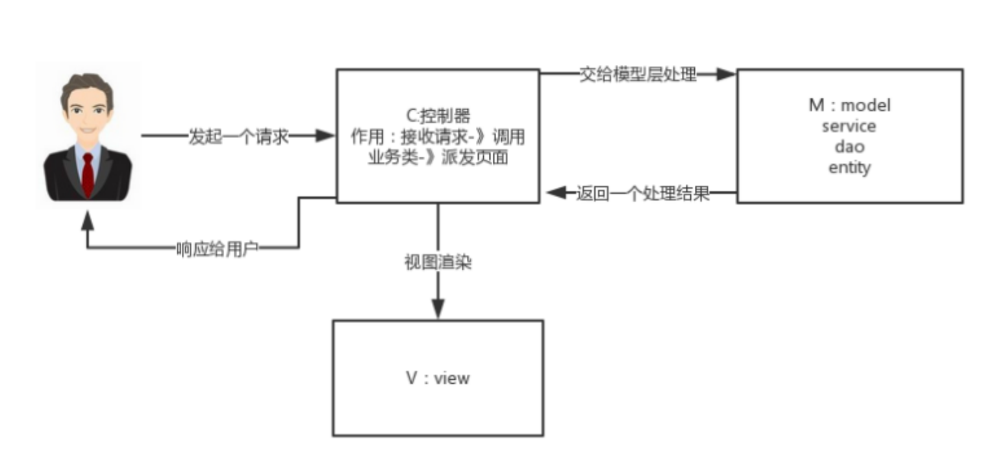

mvc流程
MVC
MVC是一种软件架构模式，Model-View-Controller。作为一个服务端，要接收若干请求，然后进行相应处理，还要返还给客户端数据，所以这一套流程，如果都糅合在一个代码块里，对于系统的维护是非常复杂的。所以采用MVC模式
- Model：模型，代表着业务逻辑和数据部分，如客户端发送的数据，服务端处理好的数据
- View：视图，代表着和客户端展示结果的部分，比如可以返回一个页面
- Controller：控制，代表着和客户端交互的部分，接收客户端的输入，处理模型数据，返回试图

Spring Web MVC 流程
- 就是Servlet的封装，建立在Servlet API上的原始Web框架
大致的流程就是
- 由一个调度器接收请求uri
- 通过map<uri,handler>，查找获得一个处理器
- 再将这个处理器交给执行器
- 执行器执行的结果返回给调度器
- 调度器将结果给视图部分，返回给调度器
- 调度器返回给客户端
网上具体的
- 用户发送出请求被前端控制器
DispatcherServlet拦截进行处理。 - DispatcherServlet收到请求调用
HandlerMapping（处理器映射器）。 - HandlerMapping找到具体的处理器(查找xml配置或注解配置)，生成处理器对象及处理器拦截器(如果有，也就是执行器链)，再一起返回给DispatcherServlet。
- DispatcherServlet调用
HandlerAdapter（处理器适配器）。 - HandlerAdapter经过适配调用具体的处理器（Handler/Controller）。
- Controller执行完成返回
ModelAndView对象。 - HandlerAdapter将Controller执行结果ModelAndView返回给DispatcherServlet。
- DispatcherServlet将ModelAndView传给ViewReslover（视图解析器）。
ViewReslover解析ModelAndView后返回具体View（视图）给DispatcherServlet。- DispatcherServlet根据View进行渲染视图（即将模型数据填充至视图中）。
- DispatcherServlet响应View给用户。
Last modified on 2024-05-24